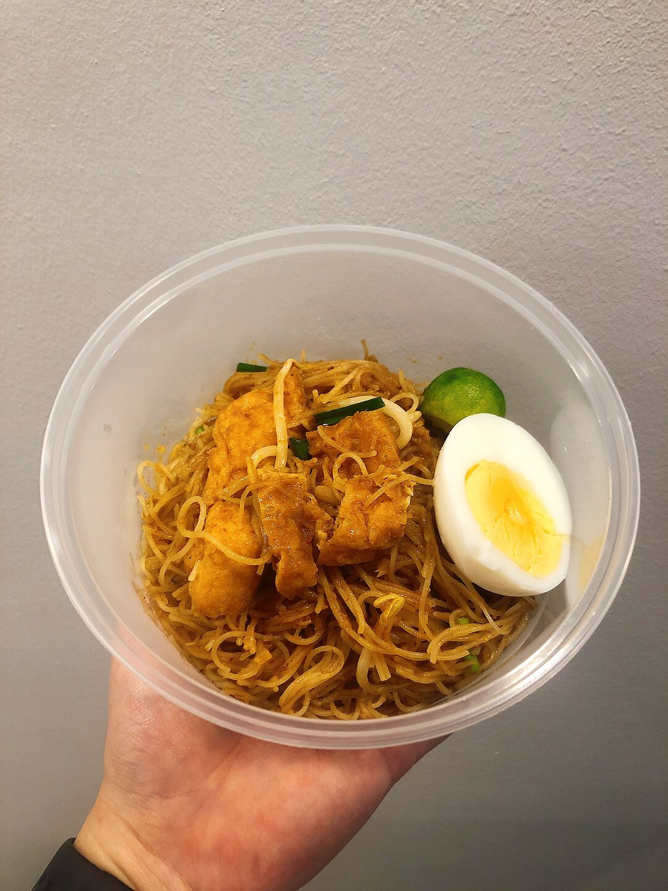

Mee Siam

Description
This is a well loved Singaporean dish that has Peranakan and Malay roots. Thin bee hoon fried in a secret rempah recipe with bean sprouts, chives and topped off with calamansi.
There is both a wet and dry version of this dish.
Ingredients
- Thin bee hoon
- Mee Siam Paste
- Prawn Stock
- Garlic
- Assam water
- Shallots
- Dried Shrimp
- Belachan
- Egg
- Tau Pok
- Bean Sprouts
- Chives
- Calamansi
Steps
- Soak bee hoon in water for about 30 minutes
- Grind garlic, shallots and dried shrimp into a paste.